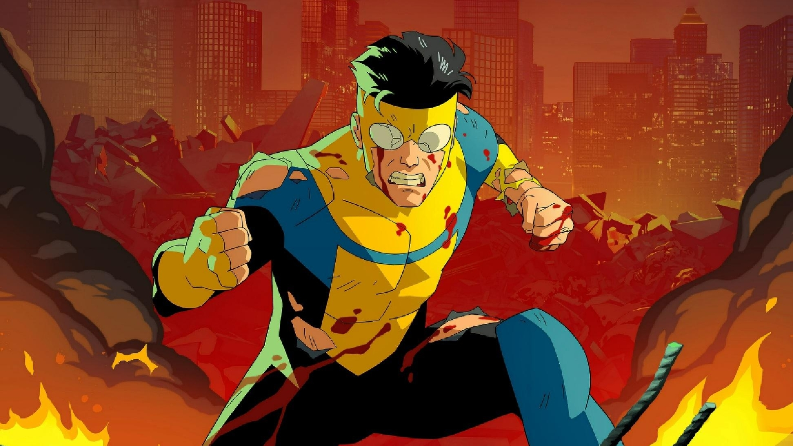
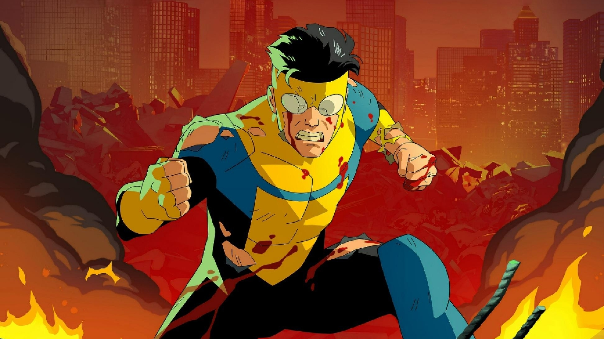

Nicholas Kocurek
|
I am a first-year CSE PhD student at the University of Washington Allen School as part of the CS Theory and Quantum CS Groups, where I am fortunate to work with Chinmay Nirkhe and Shayan Oveis Gharan. Previously, I did my undergraduate at Carnegie Mellon University. My email is nichok6[at]cs[dot]washington[dot]edu and my office is Gates 281. |
 Picture is from the Shofuso Japanese Cultural Center in Philly
Picture is from the Shofuso Japanese Cultural Center in Philly
|
Nicholas Kocurek
I am a first-year CSE PhD student at the University of Washington Allen School as part of the CS Theory and Quantum CS Groups, where I am fortunate to work with Chinmay Nirkhe and Shayan Oveis Gharan. Previously, I did my undergraduate at Carnegie Mellon University.
Contact: nichok6[at]cs[dot]washington[dot]edu.
Office: Gates 281.
Research
I am broadly interested in theoretical computer science and particularly in classical and quantum complexity theory. Even more specifically, I work on quantum hardness-of-approximation and approximate counting/sampling. Recently, I have been thinking about what makes low energy states of local Hamiltonians complex.
Publications
-
Sampling and Identity-Testing Without Approximate Tensorization of Entropy
Manuscript
[arXiv]
-
Spectral Refutations of Semirandom ùëò-LIN over Larger Fields
APPROX 2025
[arXiv]
-
Pseudorandomness Properties of Random Reversible Circuits
CRYPTO 2025
[arXiv]
Other Writing
-
Streaming Stable Matchings
CMU 15-851 Course Project
[pdf]
Teaching
- [CMU] 15-251: Great Ideas in Theoretical Computer Science (Fall 2022-Spring 2025)
- [CMU] 15-252: More Great Ideas in Theoretical Computer Science (Fall 2024)
- [CMU] 15-354: Computational Discrete Math (Fall 2024)
- [CMU] 15-455: Undergraduate Complexity Theory (Spring 2024, Spring 2025)
Miscellaneous
I am a big fan of , Pittsburgh sports, social deduction games, and mystery novels.
 


I pronounce my last name "koh-sir-ick".
Here is a simple diagram explaining the strange etymology of "kolache" in Texas.
is a simple diagram explaining the strange etymology of "kolache" in Texas.
Miscellaneous
I am a big fan of animation (broadly defined), Pittsburgh sports, social deduction games, and mystery novels.
I pronounce my last name "koh-sir-ick".
Here is a simple diagram explaining the strange etymology of "kolache" in Texas.